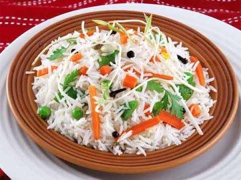

Ingredients
1.Basmati Rice - 2 cups
2.Chopped mixed fruits (canned or fresh or dried) - 1 cup (like apples, raisins,
apricots, peaches, pineapple, kiwi, dried cranberries, candied cherries etc)
3.Mixed nuts - 1/2 cup ( Almonds, pecan, walnut, cashews etc.)
4.Saffron strands - 1/4 tsp (for garnish) + 1/4 tsp (for cooking with rice)
5.Whole Garam Masala - 1 bay leaf, 1 cinnamon stick, 3 cardomon, 3 cloves
6.Cream - 2 tblsp
7.Milk - 1/2 cup
8.Water - 2 cups
9.Sugar - 1 tblsp
10.Cumin seeds - 1/2 tsp
11.Ghee/ Butter - 2 tblsp
12.Rose water - 1 tsp
13.Salt - as needed
For garnish you can use
1.Edible Rose Petals
2.Fresh fruits (chopped)
3.Fried Onions
4.Cilantro
Method
1. Wash and soak the rice for atleast 10 minutes. Drain it and keep aside.
2. Heat Ghee/ butter in a pan. Add cumin seeds and whole garam masala (cinnamon, bay leaf, cardamon, cloves).
3. Add the sugar to this and fry for a minute followed by the nuts.
4. Add the cream, milk, saffron and water to this and bring it to a boil.
5. In the mean time, fry the rice in little ghee/butter. This step is important as it makes the rice nutty and keeps each grain seperate after it gets cooked.
6. Add this fried rice to the boiling milk water mixture along with required salt.
7. After it comes to a boil, reduce the flame to low, cover with a tight lid and
let it cook for 20-25 minutes.
(If using a pressure cooker, just 1 whistle would do)
8. Transfer the rice gently to a large mixing bowl.
9. Add the fruits, remaining saffron strands and rose water to it. Gently mix with a fork.
10. Cover with a aluminium foil or a tight lid and let it rest for 5-10 to let all the flavors to blend.
11. Garnish with edible rose petals, more fruits, nuts, cilantro, fried onions and serve hot with raita.